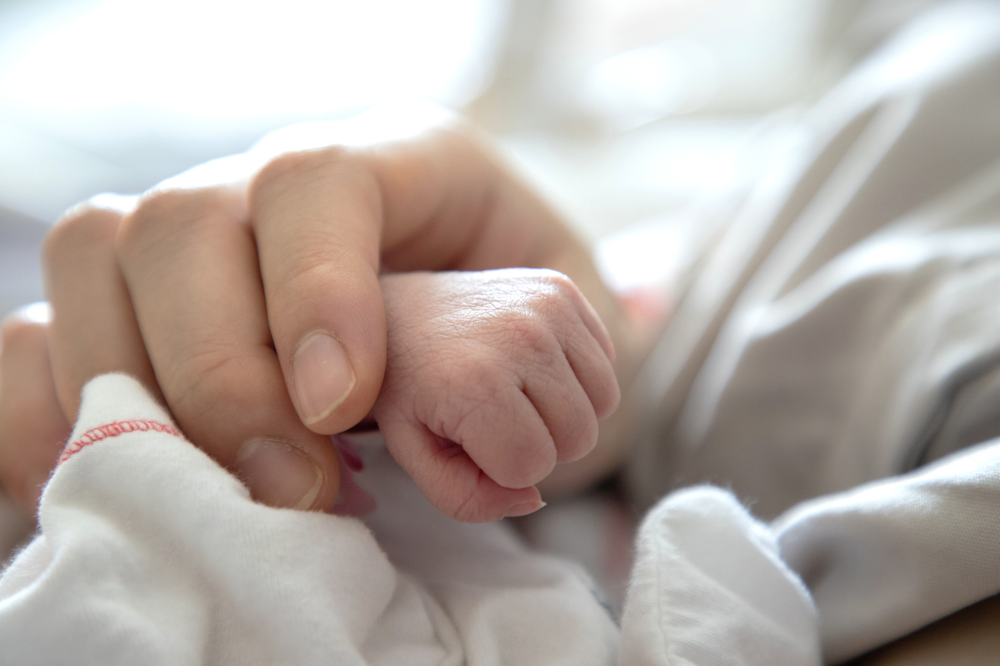
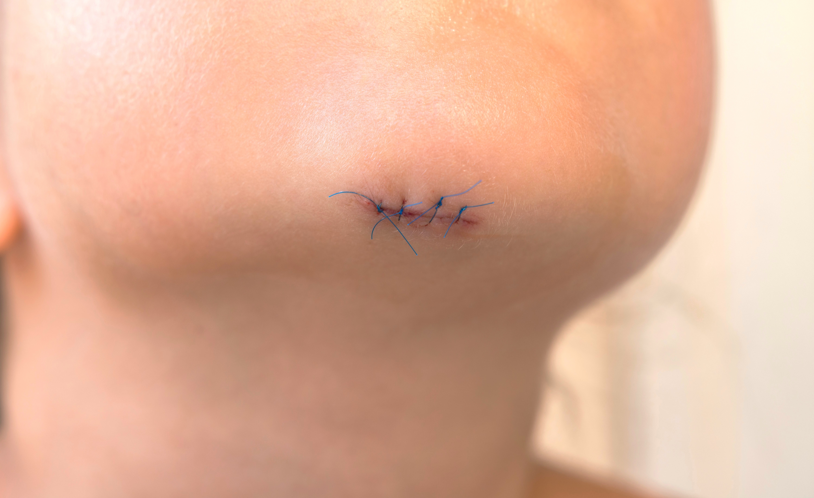
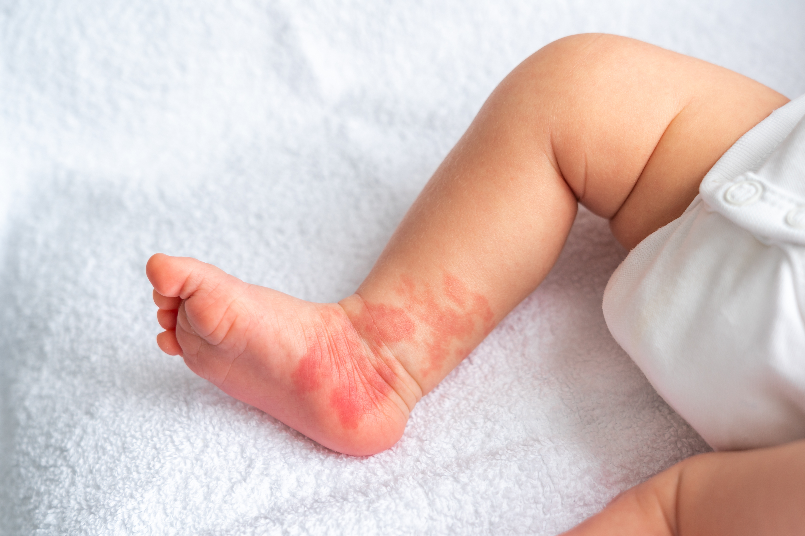
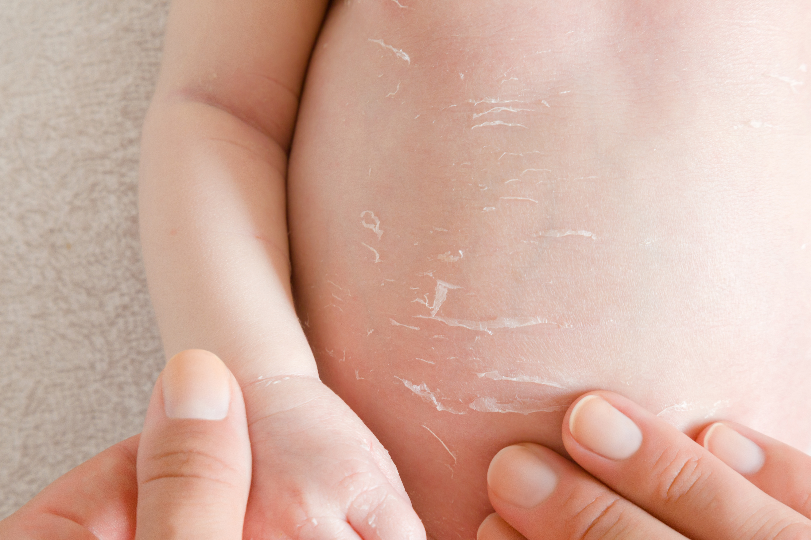
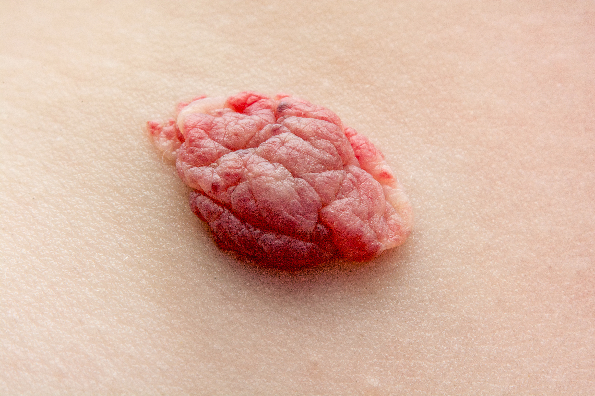
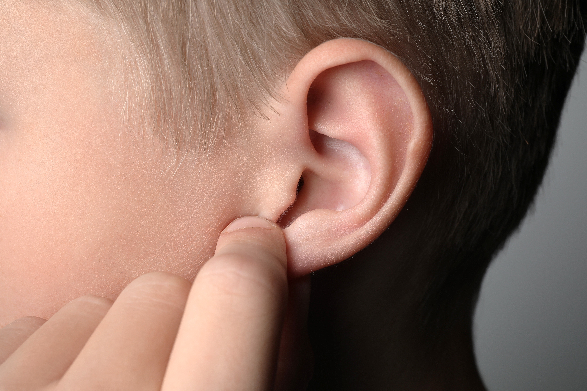
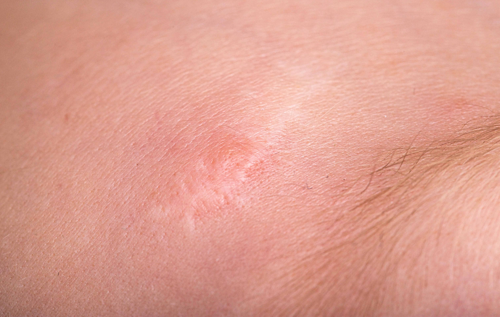

소아 열상, 소아 화상, 소아 모반 등 어린이 환자에게는 성장을 고려한 치료 계획이 필요합니다.
아이가 덜 무서워하는 환경에서, 부모님이 안심할 수 있는 종합병원 시스템으로 진료합니다.
어린이는 작은 어른이 아닙니다. 성장을 고려한 별도의 치료 기준이 있습니다.
소아 환자의 상처와 흉터는 성인과 다른 방식으로 접근해야 합니다. 아이들은 성장하면서 피부 면적이 넓어지므로, 어릴 때 생긴 흉터가 나이 들면서 더 잡아당겨질 수 있습니다. 이를 예측하여 처음부터 여유 있게 설계하는 것이 소아 성형외과의 원칙입니다.
또한 소아는 진료 과정에서의 공포와 불안이 향후 병원 기피로 이어질 수 있습니다. 선메디컬센터 유성선병원 성형외과는 아이가 덜 무서워하도록 설명과 처치 과정을 세심하게 배려하며, 보호자에게는 치료 과정과 이후 관리 방법을 충분히 안내합니다.
소아 수면마취·전신마취는 체중과 발달 상태에 맞는 전문 관리가 필요합니다. 전담 마취과 전문의가 소아 환자의 마취를 전담하며 종합병원 응급 체계가 뒷받침합니다.

어릴 때 생긴 흉터가 성장하면서 변할 수 있습니다. 현재 상태만 보는 것이 아니라 성인이 될 때를 예측하여 처음부터 치료 계획을 설계합니다.
보호자가 치료 과정을 완전히 이해하고 결정할 수 있도록 충분히 설명합니다. 치료 후 가정에서의 관리 방법도 구체적으로 안내합니다.

뛰다가 넘어지거나 부딪혀서 생긴 찢어진 상처를 성형외과적 방법으로 봉합합니다. 흉터가 최소화되도록 봉합 방법을 선택합니다.

선천성 모반(점), 색소 모반, 혈관 모반 등을 제거합니다. 크기와 성장 가능성을 평가하여 제거 시기와 방법을 결정합니다. 악성화 위험이 있는 모반은 우선적으로 검토합니다.

뜨거운 물, 냄비, 다리미 등으로 인한 소아 화상을 치료합니다. 소아는 같은 온도에서도 피부가 더 깊이 손상되므로 신속한 평가와 적극적 처치가 필요합니다.

영아 혈관종(딸기 혈관종)과 혈관 기형을 진단하고 치료합니다. 대부분의 영아 혈관종은 자연 소실되지만, 위치와 크기에 따라 조기 치료가 필요한 경우를 선별합니다.

귀가 많이 튀어나와 학교에서 놀림을 받거나 심리적 스트레스가 있는 경우 교정합니다. 귀의 성장이 완료되는 만 6세 이후가 수술 적기입니다.

사고나 수술로 생긴 흉터가 성장하면서 당겨지거나 두드러지는 경우를 예방·치료합니다. 레이저, 압박 드레싱, 흉터 연고 처방을 통해 최적의 흉터 결과를 유도합니다.
아이의 상태 사진을 카카오톡으로 보내주시면 빠르게 안내드립니다.